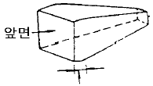
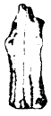
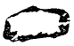
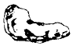
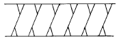
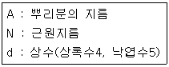

조경기능사 (2002-01-27 기출문제)
1과목: 조경일반
1. 골프장 코오스 중 출발지점을 무엇이라 하는가?
- 티이(tee)
- 그리인(green)
- 페어웨이(fair way)
- 하자드(hazard)
(정답률: 93%)

2. 정원수의 60%까지를 소나무로 배치하거나 향나무를 심어 전체를 하나의 힘찬 형태나 색채 또는 선으로 통일 시켰을 때 나타나는 아름다움은?
- 단순미
- 통일미
- 점층미
- 균형미
(정답률: 86%)
3. 베르사이유 궁원을 꾸민 사람은?
- 르 노트르
- 옴스테드
- 챔버
- 팩스톤
(정답률: 86%)
4. 자연식 조경 중 숲과 깊은 굴곡의 수변을 이용한 정원 양식은?
- 전원 풍경식
- 회유 임천식
- 고산수식
- 중정식
(정답률: 55%)
5. 조경과 가장 관계가 없는 계획은?
- 국토계획
- 경제계획
- 도시계획
- 경관계획
(정답률: 85%)
6. 고려시대 정원 요소의 두드러진 특징이 아닌 것은?
- 석가산(石假山)
- 원정(園亭)
- 화원(花園)
- 화계(花階)
(정답률: 56%)
7. 중국정원의 기원이라 할 수 있는 것은?
- 상림원
- 북해공원
- 중앙공원
- 이화원
(정답률: 77%)
8. 우리나라에서 최초의 유럽식 정원은?
- 덕수궁 석조전 앞 정원
- 파고다공원
- 장충공원
- 구 중앙청사 주위 정원
(정답률: 87%)
9. 일본의 다정(茶庭)이 나타내는 아름다움은?
- 조화미
- 대비미
- 단순미
- 통일미
(정답률: 81%)
10. 차폐를 할 필요가 있을 때는?
- 아름다운 곳을 돋보이게 하기 위해
- 경관상의 가치가 없거나 너무 노출된 것을 막기 위해
- 차경(借景)을 하기 위해
- 통경선을 조성하기 위해
(정답률: 86%)
11. 조경에서 점을 취급할 때 짜임새 구성요소로써 이용되는 것이 아닌 것은?
- 대비
- 균형
- 강조
- 분할
(정답률: 68%)
12. 토양의 단면에 있어 낙엽과 그 분해 물질 등 대부분 유기물로 되어 있는 토양 고유의 층으로 L층, F층, H층으로 구성되어 있는 층은?
- A층
- Ao층
- B층
- C층
(정답률: 74%)
13. 다음 중 중세시대의 스페인-사라센문화에 의해 이루어진 조경작품으로 구성된 것은?
- 알함브라, 헤네랄리페
- 알함브라, 타지마할
- 타지마할, 헤네랄리페
- 알함브라, 니샤트바그
(정답률: 72%)
14. 큰 호수를 매립했을 때 일어날 수 있는 환경의 변화가 아닌 것은?
- 풍속의 증가
- 온도의 상승
- 기후의 건조
- 배수불량
(정답률: 58%)
15. 자연환경조사 단계 중 미기후와 관련된 조사 항목이 아닌 것은?
- 태양 복사열을 받는 정도
- 지하수 유입 지역
- 공기 유통의 정도
- 안개 및 서리해 유무
(정답률: 74%)
2과목: 조경재료
16. 이산화황에 견디는 힘이 가장 강한 수종은?
- 독일가문비
- 삼나무
- 히말라야시이다
- 가시나무
(정답률: 48%)
17. 덩굴성 식물로 짝지어진 것은?
- 으름, 수국
- 등나무, 금목서
- 송악, 담쟁이덩굴
- 치자나무, 멀꿀나무
(정답률: 85%)
18. 맹아력이 강한 나무로 짝지어진 것은?
- 향나무, 무궁화
- 쥐똥나무, 가시나무
- 느티나무, 해송
- 미류나무, 소나무
(정답률: 64%)
19. 조경용으로 쓰이는 섬유재가 아닌 것은?
- 볏짚
- 새끼줄
- 밧줄
- 털실
(정답률: 87%)
20. 다음 그림의 마름돌은 무엇인가?

- 장대석
- 호박돌
- 견치석
- 사고석
(정답률: 86%)
21. 조경수목이 갖추어야 할 조건이 아닌 것은?
- 쉽게 옮겨 심을 수 있을 것
- 착근이 잘 되고 생장이 잘 되는 것
- 그 땅의 토질에 잘 적응 할 수 있는 것
- 희귀하여 가치가 있는 것
(정답률: 91%)
22. 여름부터 가을까지 꽃을 감상할수 있는 알뿌리 화초는?
- 튜울립
- 수선화
- 아네모네
- 칸나
(정답률: 69%)
23. 심근성 나무라 볼 수 없는 것은?
- 전나무
- 백합나무
- 은행나무
- 현사시나무
(정답률: 60%)
24. 옥외에서 사용되는 퍼골라의 들보와 도리를 만들고자 할 때 가장 적당한 목재는?
- 라왕
- 현사시나무
- 밤나무
- 버즘나무
(정답률: 54%)
25. 상록성 지피용으로 사용할 수 있는 초본 식물은?
- 잔디
- 누운향
- 크로바
- 맥문동
(정답률: 76%)
26. 풍경식 정원에서 요구되는 계단의 재료는 어느 것이 가장 적당한가?
- 벽돌계단
- 인조목계단
- 콘크리이트계단
- 통나무계단
(정답률: 87%)
27. 다음 그림들은 돌의 모양을 나타낸 것이다. 입석(立石)은?



(정답률: 88%)
28. 겨울철 또는 수중 공사 등 빠른 시일내에 마무리 해야 할 공사에 사용하기 편리한 시멘트는?
- 보통 포틀랜드 시멘트
- 중용열 포틀랜드 시멘트
- 조강 포틀랜드 시멘트
- 슬래그 시멘트
(정답률: 80%)
29. 목재에 수분이 침투되지 못하도록 하여 부패를 방지할 수 있는 방법은?
- 표면 탄화법
- 니스 도장법
- 약제 주입법
- 비닐 포장법
(정답률: 69%)
30. 석재 중 석회암이 변질된 것으로 무늬가 화려하고 아름 다우며 석질이 연하여 가공하기 쉬운 것은?
- 화강암
- 안산암
- 대리석
- 점판암
(정답률: 76%)
31. 다음 중 녹음수로 적당하지 않은 나무는?
- 플라타나스
- 느티나무
- 은행나무
- 반송
(정답률: 80%)
32. 다음 중 봄에 개화하는 나무가 아닌 것은?
- 백목련
- 매화나무
- 백합나무
- 수수꽃다리
(정답률: 57%)
33. 다음 석재 중 흡수율이 가장 큰 것은?
- 화강암
- 안산암
- 응회암
- 대리석
(정답률: 62%)
34. 우리나라에서 가장 많이 이용되는 잔디는?
- 들잔디
- 고려잔디
- 비로드잔디
- 갯잔디
(정답률: 87%)
35. 합판의 특징이 아닌 것은?
- 수축.팽창의 변형이 적다.
- 균일한 크기로 제작 가능하다.
- 균일한 강도를 얻을 수 있다.
- 내화성을 높일 수 있다.
(정답률: 82%)
3과목: 조경 시공 및 관리
36. 장미, 단풍나무, 배롱나무, 벚나무 등에 많이 발생하며 석회유황합제 살포로 방제할 수 있는 병해는?
- 흰가루병
- 녹병
- 빗자루병
- 그을음병
(정답률: 63%)
37. 일반적으로 상단이 좁고 하단이 넓은 형태의 옹벽으로 3m내외의 낮은 옹벽에 많이 쓰이는 것은?
- 중력식 옹벽
- 캔티레버 옹벽
- 부축벽 옹벽
- 석축 옹벽
(정답률: 75%)
38. 다음은 연못의 급배수에 대한 설명이다. 적당하지 않은 것은?
- 배수공은 연못 바닥의 가장 깊은 곳에 설치한다.
- 항상 일정한 수위를 유지하기 위한 시설을 토수구라 한다.
- 일류공에는 철망을 설치할 필요가 있다.
- 급배수에 필요한 파이프의 굵기는 강우량과 급수량을 고려해야 한다.
(정답률: 58%)
39. 개화결실을 목적으로 실시하는 정지, 전정 방법 중 옳지 못한 것은?
- 약지(弱枝)는 길게, 강지(强枝)는 짧게 전정하여야 한다.
- 묶은가지나 병충해가지는 수액유동 전에 전정한다.
- 작은 가지나 내측(內側)으로 뻗은 가지는 제거한다.
- 개화 결실을 촉진하기 위하여 가지를 유인하거나 단근 작업을 실시한다.
(정답률: 72%)
40. 소나무류의 잎솎기는 어느 때 하는 것이 좋은가?
- 3월경
- 4월경
- 6월경
- 8월경
(정답률: 58%)
41. 소나무에 많이 발생하는 솔나방 구제에 가장 효과적인 농약은?
- 만코지제(다이센)
- 캡탄수화제(오소싸이드)
- 포리옥신수화제
- 디프제(디프록스)
(정답률: 63%)
42. 추위로 줄기밑 수피가 얼어터져 세로 방향의 금이 생겨 말라죽는 일이 생기는 나무는?
- 단풍나무
- 은행나무
- 버즘나무
- 소나무
(정답률: 62%)
43. 동계전정의 설명으로 틀린 것은?
- 낙엽수는 휴면기에 실시하므로 전정을 하여도 나무에 별 피해가 없다.
- 제거대상가지를 발견하기 쉽고 작업도 용이하다.
- 12 - 3월에 실시한다.
- 상록수는 동계에 강전정하는 것이 가장 좋다.
(정답률: 80%)
44. 건물과 정원을 연결시키는 역할을 하는 시설은?
- 아아치
- 트렐리스
- 피어걸러
- 테라스
(정답률: 79%)
45. 콘크리트 부어 넣기의 방법이 올바른 것은?
- 비빔장소에서 먼 곳으로부터 가까운 곳으로 옮겨가며 붓는다.
- 계획된 작업구역 내에서 연속적인 붓기를 하면 안된다.
- 한 구역내에서는 콘크리트 표면이 경사지게 붓는다.
- 재료가 분리된 경우에는 물을 넣어 다시 비벼쓴다.
(정답률: 74%)
46. 디딤돌 놓기 방법의 설명으로 부적합한 것은?
- 돌의 머리는 경관의 중심을 향해서 놓는다.
- 돌 표면이 지표면보다 3-6cm 정도 높게 앉힌다.
- 돌 밑의 빈 곳에 흙을 충분히 밀어 넣으면서 다진다.
- 돌의 크기와 모양이 고른 것을 선택하여 사용한다.
(정답률: 53%)
47. 다음 설계기호는 무엇을 표시한 것인가?

- 인조석
- 잡석다짐
- 보도블록포장
- 콘크리트
(정답률: 77%)
48. 새끼(볏짚제품)의 용도를 설명한 것이다. 틀리게 설명된 것은?
- 더위에 약한 나무를 보호하기 위해서 줄기에 감는다.
- 옮겨심는 나무의 뿌리분이 상하지 않도록 감아준다.
- 강한 햇빛에 줄기가 타는 것을 방지하기 위하여 감아 준다.
- 천공성 해충의 침입을 방지하기 위하여 감아준다.
(정답률: 67%)
49. 뿌리분의 직경을 정할 때 그 계산식이 옳은 것은?

- A = 24 + (N - 3) × d
- A = 24 + (N + 3) × d
- A = 25 + (N - 5) × d
- A = 20 + (N + 2) × d
(정답률: 78%)
50. 이식할 수목의 가식장소와 그 방법의 설명으로 잘못된 것은?
- 공사의 지장이 없는 곳에 감독관의 지시에 따라 가식 장소를 정한다.
- 그늘지고 배수가 잘 되지 않는 곳을 선택한다.
- 나무가 쓰러지지 않도록 세우고 뿌리분에 흙을 덮는다.
- 필요한 경우 관수시설 및 수목 보양시설을 갖춘다.
(정답률: 86%)
51. 조경수 전정의 방법이 옳지 않은 것은?
- 전체적인 수형의 구성을 미리 정한다.
- 충분한 햇빛을 받을 수 있도록 가지를 배치한다.
- 병해충 피해를 받은 가지는 제거한다.
- 아래에서 위로 올라 가면서 전정한다.
(정답률: 85%)
52. 다음 중 정원의 관리 요령이 잘못된 것은?
- 분수나 폭포에 대한 급수관이 노출되어 있을 때는 짚이나 거적으로 싸준다.
- 다듬기 작업은 적어도 늦봄과 초가을에 두번 실시 하되, 겨울에도 한번은 해야 좋다.
- 지나치게 우거지지 않도록 1년에 두번은 가지솎기를 해준다.
- 디딤돌의 보수는 앞뒤에 놓인 디딤돌의 높이를 최대한 고려한다.
(정답률: 62%)
53. 시방서에 대하여 옳게 설명한 것은?
- 설계 도면에 필요한 예산계획서이다.
- 공사계약서이다.
- 평면도, 입면도, 투시도 등을 볼 수 있도록 그려 놓은 것이다.
- 공사개요, 시공방법, 특수재료에 관한 사항 등을 명기한 것이다.
(정답률: 81%)
54. 공원에 배식할 때 가장 적정한 상록수와 낙엽수의 비율은?
- 3:7
- 5:5
- 6:4
- 8:2
(정답률: 69%)
55. 양잔디밭 시공 중 포기를 풀어 심어 가꾸기를 할 수 있는 잔디는?
- 켄터키 불루우 그래스
- 퍼레니얼 라이 그래스
- 레드톱
- 하이브릿 버어뮤다 그래스
(정답률: 54%)
56. 비탈면의 기울기는 관목 식재시 어느 정도로 하는 것이 좋은가?
- 1 : 0.3보다 완만하게
- 1 : 2보다 완만하게
- 1 : 4보다 완만하게
- 1 : 6보다 완만하게
(정답률: 71%)
57. 정원설계에 주로 많이 사용되는 축척은?
- 1/50 ~ 1/100
- 1/300 ~ 1/600
- 1/600 ~ 1/1000
- 1/1000 ~ 1/1200
(정답률: 68%)
58. 1 ㎥ 토량에 대한 운반 품셈은 0.2인으로 할 때 2인의 인부가 100㎥ 흙을 운반하려면 며칠이 필요한가?
- 5일
- 10일
- 40일
- 50일
(정답률: 72%)
59. 식재를 위한 표토 복원 두께를 설명한 것 중 맞지 않는 것은?
- 초화류 식재지는 5~10cm
- 관목 식재지는 40~50cm
- 교목 식재지는 60cm 이상
- 지피류 식재지는 20~30cm
(정답률: 56%)
60. 좁은 정원에 식재된 나무가 필요 이상으로 커지지 않게 하기 위하여 녹음수를 전정하는 것은?
- 생장을 돕기 위한 전정
- 생장을 억제하는 전정
- 생리 조정을 위한 전정
- 갱신을 위한 전정
(정답률: 86%)